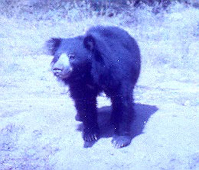

<head>
<meta http-equiv="Content-Type" content="text/html; charset=windows-1252">
<meta name="GENERATOR" content="Microsoft FrontPage 4.0">
<meta name="ProgId" content="FrontPage.Editor.Document">
<title>New Page 1</title>
<meta http-equiv="Content-Type" content="text/html; charset=windows-1252">
<meta name="GENERATOR" content="Microsoft FrontPage 4.0">
<meta name="ProgId" content="FrontPage.Editor.Document">
<title>ECONOMICALLY IMPORTANT PLANTS OF INDIA compiled by K</title>
<meta http-equiv="Content-Type" content="text/html; charset=windows-1252">
<meta name="GENERATOR" content="Microsoft FrontPage 4.0">
<meta name="ProgId" content="FrontPage.Editor.Document">
<title>ECONOMICALLY IMPORTANT PLANTS OF INDIA</title>
<meta http-equiv="Content-Type" content="text/html; charset=windows-1252">
<meta name="GENERATOR" content="Microsoft FrontPage 4.0">
<meta name="ProgId" content="FrontPage.Editor.Document">
<title>New Page 1</title>
<META HTTP-EQUIV="CONTENT-TYPE" CONTENT="text/html; charset=windows-1252">
<TITLE>Aegle marmelos </TITLE>
<META NAME="GENERATOR" CONTENT="Microsoft FrontPage 4.0">
<META NAME="CREATED" CONTENT="20010726;17265013">
<META NAME="CHANGEDBY" CONTENT="L.Sowmya">
<META NAME="CHANGED" CONTENT="20020726;13003551">
<META NAME="DESCRIPTION" CONTENT="Economically Important Plants">
<META NAME="KEYWORDS" CONTENT="Abies pindrow">
<META NAME="ProgId" CONTENT="FrontPage.Editor.Document">
<STYLE>
	<!--
		P { color: #2c9a97 }
	-->
	</STYLE>
<meta name="Microsoft Theme" content="none">
<link>
</head>

<body LANG="en-US" bgcolor="#CCCCCC" text="#009999">
<P><A NAME="begin"></A>
</P>
<table border="1" width="100%">
  <tr>
    <td width="100%" bgcolor="#1658BC">
      <P ALIGN=CENTER><b><font face="Verdana" size="6" color="#FFFFFF">Digitized
      Inventory of Animal Resources: Mammalia&nbsp;</font></b> <font color="#FFFFFF"><br>
      <b>
      Principal Investigator: Dr. R. J. B Alfred, Co-Investigator: Dr. Rama Krishna, Contributed by:
      Dr. M.S. Pradhan</b></font><br>
      </P>
    </td>
  </tr>
</table>
<p ALIGN="CENTER">&nbsp;</p>
<P ALIGN=center><b><font face="Arial" size="5" color="#808000">&nbsp;&nbsp;</font><a href="http://stp.unipune.ernet.in/zsi/photomap.html?code=74"><b style="mso-bidi-font-weight:normal"><i style="mso-bidi-font-style:normal"><span style="mso-ansi-font-size: 9.0pt; mso-bidi-font-size: 12.0pt; mso-fareast-font-family: Times New Roman; mso-bidi-font-family: Times New Roman; mso-ansi-language: EN-US; mso-fareast-language: EN-US; mso-bidi-language: AR-SA"><font face="Arial" size="5" color="#808000">Melursus
ursinus ursinus</font></span></i><font face="Arial" size="5" color="#808000"><span style="mso-ansi-font-size: 9.0pt; mso-bidi-font-size: 12.0pt; mso-fareast-font-family: Times New Roman; mso-bidi-font-family: Times New Roman; mso-ansi-language: EN-US; mso-fareast-language: EN-US; mso-bidi-language: AR-SA">
(Shaw)</span></font></b></a><font face="Arial" size="5" color="#808000">&nbsp;&nbsp;&nbsp;&nbsp;</font><font size="6" face="Comic Sans MS" color="#009999">&nbsp;&nbsp;&nbsp;</font></b></P>
<P ALIGN=LEFT><A HREF="#Taxonomic Details"><FONT FACE="Comic Sans MS">Taxonomic 
  Details</FONT> </A><FONT FACE="Comic Sans MS"><BR>
  ----- </FONT><A HREF="#Scientific Name"><FONT FACE="Comic Sans MS">Scientific Name</FONT></A><FONT FACE="Comic Sans MS"><BR>
  ----- </FONT><A HREF="#Classification"><FONT FACE="Comic Sans MS">Classification</FONT></A><FONT FACE="Comic Sans MS"><BR>
  ----- </FONT><A HREF="#Synonyms"><FONT FACE="Comic Sans MS">Synonyms</FONT></A><FONT FACE="Comic Sans MS"><BR>
  ----- </FONT><A HREF="#Common Names"><FONT FACE="Comic Sans MS">Common Names</FONT></A><FONT FACE="Comic Sans MS"><BR>
  </FONT><A HREF="#Other Biological Details"><FONT FACE="Comic Sans MS">Other 
  Biological Details</FONT></A><FONT FACE="Comic Sans MS"><BR>
  ----- </FONT><A HREF="#Habit and Habitat"><FONT FACE="Comic Sans MS">Habit and 
  Habitat</FONT></A><FONT FACE="Comic Sans MS"><BR>
  ----- </FONT><A HREF="#Distribution"><FONT FACE="Comic Sans MS">Distribution</FONT></A><FONT FACE="Comic Sans MS"><BR>
  ---------- </FONT><A HREF="#Extend of Occurance"><FONT FACE="Comic Sans MS">Extent of
Occurrence</FONT></A><FONT FACE="Comic Sans MS"><BR>
  ---------- </FONT><A HREF="#Area of occurance"><FONT FACE="Comic Sans MS">Area of
</FONT></A><A HREF="#Area of occurance"><font face="Comic Sans MS">occurrence</font></A><FONT FACE="Comic Sans MS"><BR>
  ---------- </FONT><A HREF="#Altitude:"><FONT FACE="Comic Sans MS">Altitude</FONT></A><FONT FACE="Comic Sans MS"><BR>
  ---------- </FONT><A HREF="#Population:"><FONT FACE="Comic Sans MS">Population</FONT></A><FONT FACE="Comic Sans MS"><BR>
  ----- </FONT>
  <A HREF="#Conservation Status:"><FONT FACE="Comic Sans MS">Conservation Status</FONT></A><FONT FACE="Comic Sans MS"><BR>
  ----- </FONT>
  <A HREF="#Diagnostic Features"><FONT FACE="Comic Sans MS">Diagnostic 
  Features</FONT></A><FONT FACE="Comic Sans MS"><BR>
  ----- </FONT>
<a HREF="#Breeding system"><FONT FACE="Comic Sans MS">Breeding system</FONT></a><FONT FACE="Comic Sans MS"><BR>
  </FONT><A HREF="#Miscellaneous Information"><FONT FACE="Comic Sans MS">Miscellaneous 
  Information</FONT></A><FONT FACE="Comic Sans MS"><BR>
  </FONT><A HREF="#Literature"><FONT FACE="Comic Sans MS">Literature</FONT></A></P>
<HR SIZE=3 COLOR="#0000ff">
<P><A NAME="Taxonomic Details"></A><FONT SIZE=6><FONT FACE="Monotype Corsiva"><FONT COLOR="#1658bc"><u>Taxonomic 
  Details</u></FONT></FONT></FONT> </P>
<HR SIZE=3 COLOR="#0000ff">
<P><A NAME="Scientific Name"></A><A NAME="Classification"></A><A NAME="Synonyms"></A><A NAME="Common Names"></A> 
  <FONT FACE="Comic Sans MS, sans-serif"><U>Scientific Name</U> :&nbsp;</FONT>&nbsp;&nbsp;&nbsp;&nbsp;&nbsp;&nbsp;<font face="Arial" size="5" color="#808000">&nbsp;&nbsp;</font><b><a href="http://stp.unipune.ernet.in/zsi/photomap.html?code=74"><b style="mso-bidi-font-weight:normal"><i style="mso-bidi-font-style:normal"><span style="mso-ansi-font-size: 9.0pt; mso-bidi-font-size: 12.0pt; mso-fareast-font-family: Times New Roman; mso-bidi-font-family: Times New Roman; mso-ansi-language: EN-US; mso-fareast-language: EN-US; mso-bidi-language: AR-SA"><font face="Arial" size="5" color="#808000">Melursus
ursinus ursinus</font></span></i><font face="Arial" size="5" color="#808000"><span style="mso-ansi-font-size: 9.0pt; mso-bidi-font-size: 12.0pt; mso-fareast-font-family: Times New Roman; mso-bidi-font-family: Times New Roman; mso-ansi-language: EN-US; mso-fareast-language: EN-US; mso-bidi-language: AR-SA">
(Shaw)</span></font></b></a><font face="Arial" size="5" color="#808000">&nbsp;&nbsp;&nbsp;&nbsp;</font></b></P>
<p class="MsoNormal" style="margin-left:1.75in;text-align:justify">&nbsp;</p>
<P><font face="Comic Sans MS" size="3"><U>Classification</U><b><U>:</U></b></font></P>
<blockquote>
  <blockquote>
    <blockquote>
      <blockquote>
        <blockquote>
          <blockquote>
            <blockquote>
              <blockquote>
<P align="left"><font face="Arial" size="4"><span style="mso-bidi-font-size: 12.0pt; color: black">Order:<i style="mso-bidi-font-size: 12.0pt; color: black">&nbsp;&nbsp;&nbsp;&nbsp;&nbsp;&nbsp;</i><i style="mso-bidi-font-size: 12.0pt; color: black">&nbsp;
</i><i style="mso-bidi-font-style:normal">Carnivora</i><o:p>
</o:p>
</span></font></P>
<P align="left"><font face="Arial" size="4"><span style="mso-bidi-font-size: 12.0pt; color: black">Family:<i style="mso-bidi-font-size: 12.0pt; color: black">&nbsp;&nbsp;&nbsp;&nbsp;&nbsp;</i><i style="mso-bidi-font-size: 12.0pt; color: black">&nbsp;
</i><i style="mso-bidi-font-style:normal">Ursidae</i><o:p>
</o:p>
</span></font></P>
                <p align="left"><span style="mso-bidi-font-size: 12.0pt; mso-fareast-font-family: Times New Roman; mso-bidi-font-family: Times New Roman; color: black; mso-ansi-language: EN-US; mso-fareast-language: EN-US; mso-bidi-language: AR-SA"><font face="Arial" size="4">Subfamily:<i style="mso-bidi-font-size: 12.0pt; mso-fareast-font-family: Times New Roman; mso-bidi-font-family: Times New Roman; color: black; mso-ansi-language: EN-US; mso-fareast-language: EN-US; mso-bidi-language: AR-SA">&nbsp;
                </i><i style="mso-bidi-font-style:normal">Ursinae</i></font></span>
              </blockquote>
            </blockquote>
          </blockquote>
        </blockquote>
      </blockquote>
    </blockquote>
  </blockquote>
</blockquote>
<P><font face="Comic Sans MS, sans-serif" size="3"><BR>
  <U>Synonyms</U>:&nbsp;&nbsp;&nbsp;&nbsp;&nbsp;&nbsp;&nbsp;&nbsp;&nbsp;&nbsp;&nbsp;&nbsp;&nbsp;&nbsp;&nbsp;&nbsp;&nbsp;&nbsp;&nbsp;&nbsp;&nbsp;&nbsp;&nbsp;&nbsp;&nbsp;&nbsp;&nbsp;
</font><i style="mso-bidi-font-style: normal; mso-bidi-font-size: 12.0pt; mso-fareast-font-family: Times New Roman; mso-bidi-font-family: Times New Roman; color: black; mso-ansi-language: EN-US; mso-fareast-language: EN-US; mso-bidi-language: AR-SA"><span style="mso-bidi-font-size: 12.0pt; mso-fareast-font-family: Times New Roman; mso-bidi-font-family: Times New Roman; color: black; mso-ansi-language: EN-US; mso-fareast-language: EN-US; mso-bidi-language: AR-SA; mso-bidi-font-style: normal"><font size="4" face="Arial">Ursinus ursinus, (Shaw); U. labiatus; U. longirostris; Arceus niger</font></span></i> </P>
<P><font face="Comic Sans MS, sans-serif" size="3"><BR>
  <U>Common Names</U><SPAN STYLE="text-decoration: none">:&nbsp;&nbsp;&nbsp;&nbsp;&nbsp;&nbsp;&nbsp;&nbsp;&nbsp;&nbsp;&nbsp;&nbsp;&nbsp;</SPAN></font>&nbsp;&nbsp;&nbsp;<span style="text-decoration: none"><font face="Comic Sans MS, sans-serif" size="3">&nbsp;&nbsp;</font><font size="4" face="Arial">&nbsp;<span style="mso-bidi-font-size: 12.0pt; font-family: Verdana; mso-fareast-font-family: Times New Roman; mso-bidi-font-family: Times New Roman; color: black; mso-ansi-language: EN-US; mso-fareast-language: EN-US; mso-bidi-language: AR-SA; text-decoration: none">Sloth Bear;&nbsp; <i style="mso-bidi-font-style:normal">Regional Names:</i>&nbsp;Hindi: Bhalu, Marathi:
Aswal, Tamil and Kannada: Karadee, Telugu: Elegu, Malyalam: Pani Karadi</span>&nbsp;&nbsp;&nbsp;&nbsp;&nbsp;</font>
</span><FONT FACE="Comic Sans MS, sans-serif"><SPAN STYLE="text-decoration: none"><br>
  <BR>
  </SPAN></FONT><font face="Comic Sans MS"><BR>
  </font><BR>
</P>
<P ALIGN=RIGHT><A HREF="#begin"><U><FONT FACE="Comic Sans MS">Back to
Top</FONT></U></A></P>
<HR SIZE=3 COLOR="#0000ff">
<P><A NAME="Other Biological Details"></A><FONT SIZE=3><FONT SIZE=6><FONT FACE="Monotype Corsiva"><FONT COLOR="#1658bc"><u>Other 
  Biological Details</u></FONT></FONT></FONT></FONT> 
</P>
<P><font face="Arial" size="4"><i style="mso-bidi-font-style:normal"><b><span style="mso-bidi-font-size: 12.0pt; mso-fareast-font-family: Times New Roman; mso-bidi-font-family: Times New Roman; mso-ansi-language: EN-US; mso-fareast-language: EN-US; mso-bidi-language: AR-SA"><font color="#FF0000">Threats:&nbsp;</font></span></b></i><span style="mso-bidi-font-size: 12.0pt; mso-fareast-font-family: Times New Roman; mso-bidi-font-family: Times New Roman; color: black; mso-ansi-language: EN-US; mso-fareast-language: EN-US; mso-bidi-language: AR-SA"> Interspecific
Competition,
Loss of Habitat, Agriculture and Farming, Grazing, Human Interference, Trade,
Hunting, Corridor loss, Forest fires, Bear-Human conflict.;&nbsp;<i style="mso-bidi-font-style:normal">Effect
of threats on population (Perceived or inferred)</i>:&nbsp;Declining</span></font> 
</P>
<P><font face="Arial" size="4"><i style="mso-bidi-font-style:normal"><b><span style="mso-bidi-font-size: 12.0pt; mso-fareast-font-family: Times New Roman; mso-bidi-font-family: Times New Roman; mso-ansi-language: EN-US; mso-fareast-language: EN-US; mso-bidi-language: AR-SA"><font color="#FF0000">Trade:&nbsp;</font></span></b></i><span style="mso-bidi-font-size: 12.0pt; mso-fareast-font-family: Times New Roman; mso-bidi-font-family: Times New Roman; color: black; mso-ansi-language: EN-US; mso-fareast-language: EN-US; mso-bidi-language: AR-SA"> Local, Domestic and
International;&nbsp;<i style="mso-bidi-font-style:normal">Parts in trade</i>:&nbsp;Skin,
Live animals, Fur, Organs (Specially Gall Bladder), Meat Insurge;&nbsp;<i style="mso-bidi-font-style:normal">Effect
of trade on population (Perceived or inferred)</i>:&nbsp;Declining</span></font> 
</P>
<HR SIZE=3 COLOR="#0000ff">
<P STYLE="margin-bottom: 0cm"><A NAME="Habit and Habitat"></A><U><FONT FACE="Comic Sans MS">HABIT 
  &amp; HABITAT</FONT></U></P>
<p><font color="#000000" size="4" face="Arial"><span style="mso-bidi-font-size: 12.0pt; mso-fareast-font-family: Times New Roman; mso-bidi-font-family: Times New Roman; color: black; mso-ansi-language: EN-US; mso-fareast-language: EN-US; mso-bidi-language: AR-SA">Sloth Bear prefers to live in forest where there
is sufficient food and shelter available. They are terrestrial, semi-arboreal and
nocturnal in habit and come out shortly before sunset to feed. They hunt for
food throughout the night. To get sufficient food to support their bulky bodies
they walk long distances and work hard. Their food depends on season and
availability. They feed on different types of fruits, berries, seeds, insects
etc. Their favourite diet is Mahua flowers (<i>Madhuka latifolia</i>), termites and
honey. It climbs to hit and knock down combs full of honey. When hungry they
even feed on carrions. Sloth bear is unpredictable in temperament and can attack
a human being when provoked. After rainy season the bears can raid and attack
the fields of ripening sugarcane and maize. Sloth bear mates in hot weather and young ones
are borne in December and January. The cubs live with the mother for
2-3 years.</span>
</font></p>
<p><font face="Arial" size="4"><i style="mso-bidi-font-style:normal"><span style="mso-bidi-font-size: 12.0pt; mso-fareast-font-family: Times New Roman; mso-bidi-font-family: Times New Roman; mso-ansi-language: EN-US; mso-fareast-language: EN-US; mso-bidi-language: AR-SA"><font color="#008000"><b>Habitat Structure:</b></font></span></i><span style="mso-bidi-font-size: 12.0pt; mso-fareast-font-family: Times New Roman; mso-bidi-font-family: Times New Roman; color: black; mso-ansi-language: EN-US; mso-fareast-language: EN-US; mso-bidi-language: AR-SA">&nbsp;Sloth Bear lives in
different types of forests and grassland on hilltops. The Habitat structure is
changing with general decline.</span></font></p>
<p align=RIGHT style="margin-bottom: 0cm"><font face="Comic Sans MS" size="3"><a href="#begin">Back 
  to Top</a></font></p>
<P STYLE="margin-bottom: 0cm">&nbsp;</P>
<P><font size="3"><A NAME="Distribution"></A><A NAME="Extend of Occurance"></A><A NAME="Area of occurance:"></A><A NAME="Altitude:"></A><A NAME="Population:"></a><A NAME="Conservation status:"></A> 
  <FONT FACE="Comic Sans MS"><U>Distribution</U>:&nbsp;&nbsp;&nbsp;&nbsp;&nbsp;&nbsp;&nbsp;&nbsp;&nbsp;</FONT></font><span style="mso-bidi-font-size: 12.0pt; mso-fareast-font-family: Times New Roman; mso-bidi-font-family: Times New Roman; color: black; mso-ansi-language: EN-US; mso-fareast-language: EN-US; mso-bidi-language: AR-SA"><font face="Arial" size="4">All over India from the Himalayan foot hills to
  the extreme southernmost</font></span></P>
<P>&nbsp;&nbsp;&nbsp;<font face="Arial" size="4"><span style="mso-bidi-font-size: 12.0pt; mso-fareast-font-family: Times New Roman; mso-bidi-font-family: Times New Roman; color: black; mso-ansi-language: EN-US; mso-fareast-language: EN-US; mso-bidi-language: AR-SA">&nbsp;&nbsp;&nbsp;&nbsp;&nbsp;&nbsp;&nbsp;&nbsp;&nbsp;&nbsp;&nbsp;&nbsp;&nbsp;&nbsp;&nbsp;&nbsp;&nbsp;&nbsp;&nbsp;&nbsp;&nbsp;&nbsp;&nbsp;&nbsp;&nbsp;&nbsp;&nbsp;&nbsp;&nbsp;&nbsp;&nbsp;&nbsp;&nbsp;&nbsp;&nbsp;&nbsp;&nbsp;&nbsp;&nbsp;&nbsp;&nbsp;&nbsp;&nbsp;&nbsp;&nbsp;</span></font><span style="mso-bidi-font-size: 12.0pt; mso-fareast-font-family: Times New Roman; mso-bidi-font-family: Times New Roman; color: black; mso-ansi-language: EN-US; mso-fareast-language: EN-US; mso-bidi-language: AR-SA"><font face="Arial" size="4">
parts and Assam in the east.</font></span></P>
<blockquote>
  <blockquote>
    <blockquote>
      <blockquote>
        <blockquote>
          <blockquote>
<P><font face="Arial" size="4"><span style="mso-bidi-font-size: 12.0pt; mso-fareast-font-family: Times New Roman; mso-bidi-font-family: Times New Roman; color: black; mso-ansi-language: EN-US; mso-fareast-language: EN-US; mso-bidi-language: AR-SA"><i style="mso-bidi-font-style:normal">No.</i><i style="mso-bidi-font-style: normal; mso-bidi-font-size: 12.0pt; mso-fareast-font-family: Times New Roman; mso-bidi-font-family: Times New Roman; color: black; mso-ansi-language: EN-US; mso-fareast-language: EN-US; mso-bidi-language: AR-SA">
</i><i style="mso-bidi-font-style:normal">of Locations:&nbsp;</i>Many;&nbsp;<i style="mso-bidi-font-style:normal">Type:&nbsp;</i>Fragmented</span></font></P>
          </blockquote>
        </blockquote>
      </blockquote>
    </blockquote>
  </blockquote>
</blockquote>
<P><font face="Comic Sans MS" size="3"><U>Extent of </U><u>Occurrence&nbsp;</u><font color="#000000">&nbsp;</font></font><font face="Comic Sans MS" size="4" color="#000000">&nbsp;&nbsp;&nbsp;&nbsp;&nbsp;&nbsp;&nbsp;&nbsp;&nbsp;&nbsp;&nbsp;&nbsp;</font><font face="Arial" size="4" color="#000000">&nbsp;<span style="font-size:9.0pt;mso-bidi-font-size:12.0pt;
font-family:Verdana;mso-fareast-font-family:&quot;Times New Roman&quot;;mso-bidi-font-family:
&quot;Times New Roman&quot;;color:black;mso-ansi-language:EN-US;mso-fareast-language:
EN-US;mso-bidi-language:AR-SA">greater than 20000 sq.kms.</span>&nbsp;&nbsp;</font><font face="Comic Sans MS" size="4" color="#000000">&nbsp;</font><font face="Comic Sans MS" size="3"><BR>
  </font><font size="3"><BR>
  </font><U><font face="Comic Sans MS" size="3">Area of occurrence:</font></U><font face="Comic Sans MS" size="4" color="#000000">&nbsp;&nbsp;&nbsp;&nbsp;&nbsp;&nbsp;&nbsp;&nbsp;&nbsp;&nbsp;&nbsp;&nbsp;&nbsp;&nbsp;&nbsp;&nbsp;</font><font face="Arial" size="4" color="#000000"><span style="mso-bidi-font-size: 12.0pt; mso-fareast-font-family: Times New Roman; mso-bidi-font-family: Times New Roman; color: black; mso-ansi-language: EN-US; mso-fareast-language: EN-US; mso-bidi-language: AR-SA">greater than 2001
sq.kms.</span>&nbsp;&nbsp;&nbsp;</font><font face="Comic Sans MS" size="4" color="#000000">&nbsp;&nbsp;&nbsp;&nbsp;</font></P>
<P STYLE="margin-bottom: 0cm"><font face="Comic Sans MS" size="3"><U>Altitude:&nbsp;&nbsp;&nbsp;</U>&nbsp;&nbsp;&nbsp;&nbsp;&nbsp;&nbsp;&nbsp;&nbsp;&nbsp;&nbsp;&nbsp;&nbsp;&nbsp;&nbsp;&nbsp;&nbsp;&nbsp;&nbsp;&nbsp;&nbsp;&nbsp;&nbsp;&nbsp;&nbsp;&nbsp;&nbsp;&nbsp;&nbsp;&nbsp;&nbsp;&nbsp;&nbsp;
</font><span style="mso-bidi-font-size: 12.0pt; mso-fareast-font-family: Times New Roman; mso-bidi-font-family: Times New Roman; color: black; mso-ansi-language: EN-US; mso-fareast-language: EN-US; mso-bidi-language: AR-SA"><font face="Arial" size="4">Up
to 2500m</font></span><font face="Comic Sans MS" size="3"><BR>
  <BR>
  <U>Population:</U></font><font color="#000000" face="Comic Sans MS" size="4">&nbsp;&nbsp;&nbsp;&nbsp;&nbsp;&nbsp;&nbsp;&nbsp;&nbsp;&nbsp;&nbsp;&nbsp;&nbsp;&nbsp;&nbsp;&nbsp;&nbsp;</font></P>
<P STYLE="margin-bottom: 0cm"><font face="Arial" size="4"><i style="mso-bidi-font-style:normal"><b><span style="mso-bidi-font-size: 12.0pt; mso-fareast-font-family: Times New Roman; mso-bidi-font-family: Times New Roman; mso-ansi-language: EN-US; mso-fareast-language: EN-US; mso-bidi-language: AR-SA"><font color="#008000">Global Population:</font></span></b><span style="mso-bidi-font-size: 12.0pt; mso-fareast-font-family: Times New Roman; mso-bidi-font-family: Times New Roman; color: black; mso-ansi-language: EN-US; mso-fareast-language: EN-US; mso-bidi-language: AR-SA">&nbsp;</span></i><span style="mso-bidi-font-size: 12.0pt; font-family: Verdana; mso-fareast-font-family: Times New Roman; mso-bidi-font-family: Times New Roman; color: black; mso-ansi-language: EN-US; mso-fareast-language: EN-US; mso-bidi-language: AR-SA">Regional Population:
5000-7000(CAMP Report, 1998);&nbsp;<i style="mso-bidi-font-style:normal">No.</i><i style="mso-bidi-font-style: normal; mso-bidi-font-size: 12.0pt; mso-fareast-font-family: Times New Roman; mso-bidi-font-family: Times New Roman; color: black; mso-ansi-language: EN-US; mso-fareast-language: EN-US; mso-bidi-language: AR-SA">
</i><i style="mso-bidi-font-style:normal">of
mature individuals in all the populations:&nbsp;</i>greater than 2500</span></font></P>
<P STYLE="margin-bottom: 0cm"><font face="Arial" size="4"><i style="mso-bidi-font-style:normal"><b><span style="mso-bidi-font-size: 12.0pt; mso-fareast-font-family: Times New Roman; mso-bidi-font-family: Times New Roman; mso-ansi-language: EN-US; mso-fareast-language: EN-US; mso-bidi-language: AR-SA"><font color="#008000">Captive Population:&nbsp;</font></span></b></i><span style="font-size:9.0pt;
mso-bidi-font-size:12.0pt;font-family:Verdana;mso-fareast-font-family:&quot;Times New Roman&quot;;
mso-bidi-font-family:&quot;Times New Roman&quot;;color:black;mso-ansi-language:EN-US;
mso-fareast-language:EN-US;mso-bidi-language:AR-SA">Males: 68 + Females: 55 +
Unsexed: 16 = Total: 139 in Indian Zoos; Males: 19 + </span><span style="mso-bidi-font-size: 12.0pt; mso-fareast-font-family: Times New Roman; mso-bidi-font-family: Times New Roman; mso-ansi-language: EN-US; mso-fareast-language: EN-US; mso-bidi-language: AR-SA"><font color="#000000"> Females: 20 = Total:39 in
Zoos abroad (CAMP Report 1998).</font></span></font></P>
<P STYLE="margin-bottom: 0cm"><font face="Arial" size="4"><i style="mso-bidi-font-style:normal"><b><span style="mso-bidi-font-size: 12.0pt; mso-fareast-font-family: Times New Roman; mso-bidi-font-family: Times New Roman; mso-ansi-language: EN-US; mso-fareast-language: EN-US; mso-bidi-language: AR-SA"><font color="#008000">Life span:&nbsp;</font></span></b></i><span style="font-size:9.0pt;mso-bidi-font-size:
12.0pt;font-family:Verdana;mso-fareast-font-family:&quot;Times New Roman&quot;;
mso-bidi-font-family:&quot;Times New Roman&quot;;color:black;mso-ansi-language:EN-US;
mso-fareast-language:EN-US;mso-bidi-language:AR-SA"> (Wild):&nbsp;Not Known;&nbsp;(Captivity):&nbsp;40yrs
(Prater, 1980)</span></font></P>
<P STYLE="margin-bottom: 0cm"><font face="Arial" size="4"><i style="mso-bidi-font-style:normal"><b><span style="mso-bidi-font-size: 12.0pt; mso-fareast-font-family: Times New Roman; mso-bidi-font-family: Times New Roman; mso-ansi-language: EN-US; mso-fareast-language: EN-US; mso-bidi-language: AR-SA"><font color="#008000">Population Trend:&nbsp;</font></span></b></i><span style="font-size:9.0pt;
mso-bidi-font-size:12.0pt;font-family:Verdana;mso-fareast-font-family:&quot;Times New Roman&quot;;
mso-bidi-font-family:&quot;Times New Roman&quot;;color:black;mso-ansi-language:EN-US;
mso-fareast-language:EN-US;mso-bidi-language:AR-SA">Declining</span><font color="#000000">&nbsp;&nbsp;&nbsp;</font><font color="#000000" face="Comic Sans MS" size="4">&nbsp;&nbsp;&nbsp;&nbsp;&nbsp;&nbsp;&nbsp;&nbsp;&nbsp;&nbsp;&nbsp;&nbsp;&nbsp;&nbsp;&nbsp;&nbsp;&nbsp;</font></font></P><P STYLE="margin-bottom: 0cm"><font face="Comic Sans MS" size="3"><U>Conservation status:</U>&nbsp;&nbsp;&nbsp;&nbsp;&nbsp;&nbsp;&nbsp;&nbsp;&nbsp;&nbsp;&nbsp;&nbsp;&nbsp;&nbsp;&nbsp;&nbsp;</font><font color="#FF0000" face="Arial" size="5"><b><span style="mso-bidi-font-size: 12.0pt; mso-fareast-font-family: Times New Roman; mso-bidi-font-family: Times New Roman; mso-ansi-language: EN-US; mso-fareast-language: EN-US; mso-bidi-language: AR-SA">Non-Endemic
&nbsp;&nbsp;&nbsp; <b style="mso-bidi-font-weight:normal">Vulnerable</b></span>&nbsp;&nbsp;&nbsp;</b></font><font size="4" face="Arial">&nbsp;&nbsp;&nbsp;&nbsp;</font><P STYLE="margin-bottom: 0cm"><i style="mso-bidi-font-style:normal"><font size="4" face="Arial"><span style="mso-bidi-font-size: 12.0pt; mso-fareast-font-family: Times New Roman; mso-bidi-font-family: Times New Roman; color: black; mso-ansi-language: EN-US; mso-fareast-language: EN-US; mso-bidi-language: AR-SA">CITES APPENDIX:</span></font></i><font size="4" face="Arial"><span style="mso-bidi-font-size: 12.0pt; mso-fareast-font-family: Times New Roman; mso-bidi-font-family: Times New Roman; color: black; mso-ansi-language: EN-US; mso-fareast-language: EN-US; mso-bidi-language: AR-SA">&nbsp;I;&nbsp;<i style="mso-bidi-font-style:normal">Indian
Wildlife (Protection) Act (1972) (As </i><i style="mso-bidi-font-style: normal; mso-bidi-font-size: 12.0pt; mso-fareast-font-family: Times New Roman; mso-bidi-font-family: Times New Roman; color: black; mso-ansi-language: EN-US; mso-fareast-language: EN-US; mso-bidi-language: AR-SA">amended</i><i style="mso-bidi-font-style:normal">
</i><i style="mso-bidi-font-style: normal; mso-bidi-font-size: 12.0pt; mso-fareast-font-family: Times New Roman; mso-bidi-font-family: Times New Roman; color: black; mso-ansi-language: EN-US; mso-fareast-language: EN-US; mso-bidi-language: AR-SA">up to</i><i style="mso-bidi-font-style:normal">
2002):</i>&nbsp;Schedule I;&nbsp;Part
I;&nbsp;<i style="mso-bidi-font-style:normal">Indian Red Data Book (IUCN, 1994):</i>&nbsp;Not
listed;&nbsp;<i style="mso-bidi-font-style:normal">IUCN (1998)</i> (Proposed):&nbsp;Vulnerable
(National) and Data Deficient (Global);&nbsp;<i style="mso-bidi-font-style:normal">IUCN
(2002)</i> (Proposed):&nbsp;Vulnerable (Global) based on Version 2.3 1994 (IUCN,
2003);&nbsp;</span>
</font><font face="Comic Sans MS" size="3">
  <P STYLE="margin-bottom: 0cm"><font face="Comic Sans MS" size="3"><A NAME="Diagnostic Features"></A><A NAME="Breeding system"></A><U>DIAGNOSTIC 
  FEATURES</U>:</font></P>

</font>

<p class="MsoNormal" style="text-align:justify"><font size="4" face="Arial">&nbsp;<span style="mso-bidi-font-size: 12.0pt; mso-fareast-font-family: Times New Roman; mso-bidi-font-family: Times New Roman; color: black; mso-ansi-language: EN-US; mso-fareast-language: EN-US; mso-bidi-language: AR-SA">The sloth Bear is almost as big as Himalayan
Black Bear but slimmer in size and shape. It has an elongated muzzle and lower
lip, long unkempt black hairs and short hind legs. The body is covered all over
with long, coarse, unkempt black hairs with a V-shaped white mark on the chest.
Its head is broad between the ears giving it a triangular shape. The legs are
broad, feet flat and pugmarks are human like. The claws on the fore feet are
strong and white or ivory coloured. Muzzle and tip of the feet are dirty white
or yellowish. The coat may have brownish tinge. Males are generally larger than
the females. Ears large and tufted. Upper incisors four in number.</span></font></p>

<p class="MsoNormal" style="text-align:justify"><i style="mso-bidi-font-style:normal"><font size="4" face="Arial" color="#008000"><span style="mso-bidi-font-size: 12.0pt; mso-fareast-font-family: Times New Roman; mso-bidi-font-family: Times New Roman; mso-ansi-language: EN-US; mso-fareast-language: EN-US; mso-bidi-language: AR-SA"><b>Measurements:</b></span></font></i><font size="4" face="Arial"><span style="mso-bidi-font-size: 12.0pt; mso-fareast-font-family: Times New Roman; mso-bidi-font-family: Times New Roman; color: black; mso-ansi-language: EN-US; mso-fareast-language: EN-US; mso-bidi-language: AR-SA">&nbsp;(In cm/mm): Head and
Body Length: 140-170cm; Height at shoulder: 65-85cm; Length of hair (Mid
dorsal): 50-120 mm.</span></font></p>

<p class="MsoNormal" style="text-align:justify"><font color="#008000"><b><i style="mso-bidi-font-style:normal"><font size="4" face="Arial"><span style="mso-bidi-font-size: 12.0pt; mso-fareast-font-family: Times New Roman; mso-bidi-font-family: Times New Roman; mso-ansi-language: EN-US; mso-fareast-language: EN-US; mso-bidi-language: AR-SA">Weight:</span></font></i></b></font><font size="4" face="Arial"><font color="#008000"><span style="mso-bidi-font-size: 12.0pt; mso-fareast-font-family: Times New Roman; mso-bidi-font-family: Times New Roman; mso-ansi-language: EN-US; mso-fareast-language: EN-US; mso-bidi-language: AR-SA"><b>&nbsp;</b></span></font><span style="mso-bidi-font-size: 12.0pt; mso-fareast-font-family: Times New Roman; mso-bidi-font-family: Times New Roman; color: black; mso-ansi-language: EN-US; mso-fareast-language: EN-US; mso-bidi-language: AR-SA">(In Kg): Males: 127-145; Females: 64 and
above</span></font></p>
<P ALIGN=RIGHT><A HREF="#begin"><FONT FACE="Comic Sans MS">Back to
Top</FONT></A><FONT FACE="Comic Sans MS"> </FONT>
</P>
<HR SIZE=3 COLOR="#0000ff">
<P><A NAME="Miscellaneous Information2"></A><A NAME="Miscellaneous Information1"></A>
 <FONT SIZE=6><FONT FACE="Monotype Corsiva"><FONT COLOR="#1658bc">
<U>Miscellaneous
Information</U>&nbsp;&nbsp;&nbsp;</FONT></FONT></FONT>
</P>
<p><font face="Arial" size="4"><i style="mso-bidi-font-style:normal"><b><span style="mso-bidi-font-size: 12.0pt; mso-fareast-font-family: Times New Roman; mso-bidi-font-family: Times New Roman; mso-ansi-language: EN-US; mso-fareast-language: EN-US; mso-bidi-language: AR-SA"><font color="#008000">Intraspecific variations:</font></span></b></i><span style="mso-bidi-font-size: 12.0pt; mso-fareast-font-family: Times New Roman; mso-bidi-font-family: Times New Roman; color: black; mso-ansi-language: EN-US; mso-fareast-language: EN-US; mso-bidi-language: AR-SA">&nbsp;Only nomite subspecies
namely <i> Melursus ursinus ursinus </i> (Shaw) has been reported from the Indian
territory.</span></font></p>
<p><font face="Arial" size="4"><b><i style="mso-bidi-font-style:normal"><span style="mso-bidi-font-size: 12.0pt; mso-fareast-font-family: Times New Roman; mso-bidi-font-family: Times New Roman; mso-ansi-language: EN-US; mso-fareast-language: EN-US; mso-bidi-language: AR-SA"><font color="#008000">Sighting Records:&nbsp;</font></span></i><span style="mso-bidi-font-size: 12.0pt; mso-fareast-font-family: Times New Roman; mso-bidi-font-family: Times New Roman; mso-ansi-language: EN-US; mso-fareast-language: EN-US; mso-bidi-language: AR-SA"><font color="#008000">
</font></span></b><span style="mso-bidi-font-size: 12.0pt; mso-fareast-font-family: Times New Roman; mso-bidi-font-family: Times New Roman; color: black; mso-ansi-language: EN-US; mso-fareast-language: EN-US; mso-bidi-language: AR-SA"> <i style="mso-bidi-font-style:
normal">Type of Sighting:</i>&nbsp;Direct and Indirect;&nbsp;<i style="mso-bidi-font-style:normal">Field
Notes:</i>&nbsp;Sighting records in wild at different places have been reported
by Johnsingh (1989), Yoganand (1996), Bhaskar et al. (1992,1997) (Last two cited
in CAMP Report, 1998) and Pradhan (Communicated).&nbsp;</span></font></p>
<p><font face="Arial" size="4"><i style="mso-bidi-font-style:normal"><b><span style="mso-bidi-font-size: 12.0pt; mso-fareast-font-family: Times New Roman; mso-bidi-font-family: Times New Roman; mso-ansi-language: EN-US; mso-fareast-language: EN-US; mso-bidi-language: AR-SA"><font color="#008000">Taxon related studies recommended:</font></span></b><span style="mso-bidi-font-size: 12.0pt; mso-fareast-font-family: Times New Roman; mso-bidi-font-family: Times New Roman; color: black; mso-ansi-language: EN-US; mso-fareast-language: EN-US; mso-bidi-language: AR-SA">&nbsp;</span></i><span style="mso-bidi-font-size: 12.0pt; mso-fareast-font-family: Times New Roman; mso-bidi-font-family: Times New Roman; color: black; mso-ansi-language: EN-US; mso-fareast-language: EN-US; mso-bidi-language: AR-SA"><i>In-situ
</i> survey, Monitoring, Taxonomic studies at Generic level, Limiting
Factor research, Habitat Management</span></font></p>
<p><font face="Arial" size="4"><i style="mso-bidi-font-style:normal"><b><span style="mso-bidi-font-size: 12.0pt; mso-fareast-font-family: Times New Roman; mso-bidi-font-family: Times New Roman; mso-ansi-language: EN-US; mso-fareast-language: EN-US; mso-bidi-language: AR-SA"><font color="#008000">Remarks:&nbsp;</font></span></b></i><span style="mso-bidi-font-size: 12.0pt; mso-fareast-font-family: Times New Roman; mso-bidi-font-family: Times New Roman; color: black; mso-ansi-language: EN-US; mso-fareast-language: EN-US; mso-bidi-language: AR-SA">Considering the nature and
degree of threats and trades reported, it is strongly recommended to include
Sloth Bear in one of the endangered categories of IUCN.</span></font></p>
<HR SIZE=3 COLOR="#0000ff">
<P><font face="Comic Sans MS"><span style="font-size:9.0pt;mso-bidi-font-size:12.0pt;
font-family:Verdana;mso-fareast-font-family:&quot;Times New Roman&quot;;mso-bidi-font-family:
&quot;Times New Roman&quot;;color:black;mso-ansi-language:EN-US;mso-fareast-language:
EN-US;mso-bidi-language:AR-SA"><!--[if gte vml 1]><v:shapetype id="_x0000_t75"
 coordsize="21600,21600" o:spt="75" o:preferrelative="t" path="m@4@5l@4@11@9@11@9@5xe"
 filled="f" stroked="f">
 <v:stroke joinstyle="miter"/>
 <v:formulas>
  <v:f eqn="if lineDrawn pixelLineWidth 0"/>
  <v:f eqn="sum @0 1 0"/>
  <v:f eqn="sum 0 0 @1"/>
  <v:f eqn="prod @2 1 2"/>
  <v:f eqn="prod @3 21600 pixelWidth"/>
  <v:f eqn="prod @3 21600 pixelHeight"/>
  <v:f eqn="sum @0 0 1"/>
  <v:f eqn="prod @6 1 2"/>
  <v:f eqn="prod @7 21600 pixelWidth"/>
  <v:f eqn="sum @8 21600 0"/>
  <v:f eqn="prod @7 21600 pixelHeight"/>
  <v:f eqn="sum @10 21600 0"/>
 </v:formulas>
 <v:path o:extrusionok="f" gradientshapeok="t" o:connecttype="rect"/>
 <o:lock v:ext="edit" aspectratio="t"/>
</v:shapetype><v:shape id="_x0000_i1025" type="#_x0000_t75" alt="" style='width:306pt;
 height:262.5pt' fillcolor="window">
 <v:imagedata src="Mammal142.jpg"
  o:href="http://stp.unipune.ernet.in/zsi/images/photos/img74.jpg"/>
</v:shape><![endif]-->
<!--[if gte vml 1]><v:shapetype id="_x0000_t75"
 coordsize="21600,21600" o:spt="75" o:preferrelative="t" path="m@4@5l@4@11@9@11@9@5xe"
 filled="f" stroked="f">
 <v:stroke joinstyle="miter"/>
 <v:formulas>
  <v:f eqn="if lineDrawn pixelLineWidth 0"/>
  <v:f eqn="sum @0 1 0"/>
  <v:f eqn="sum 0 0 @1"/>
  <v:f eqn="prod @2 1 2"/>
  <v:f eqn="prod @3 21600 pixelWidth"/>
  <v:f eqn="prod @3 21600 pixelHeight"/>
  <v:f eqn="sum @0 0 1"/>
  <v:f eqn="prod @6 1 2"/>
  <v:f eqn="prod @7 21600 pixelWidth"/>
  <v:f eqn="sum @8 21600 0"/>
  <v:f eqn="prod @7 21600 pixelHeight"/>
  <v:f eqn="sum @10 21600 0"/>
 </v:formulas>
 <v:path o:extrusionok="f" gradientshapeok="t" o:connecttype="rect"/>
 <o:lock v:ext="edit" aspectratio="t"/>
</v:shapetype><v:shape id="_x0000_i1025" type="#_x0000_t75" alt="Map" style='width:181.5pt;
 height:225pt' fillcolor="window">
 <v:imagedata src="M%20u%20ursinus%20.jpg"
  o:href="http://stp.unipune.ernet.in/zsi/images/maps/map74.jpg"/>
</v:shape><![endif]-->
</span>&nbsp;<br>
  </font></P>
<P><font size="3"><BR>
  </font><BR>
</P>
<P ALIGN=RIGHT><A HREF="#begin"><U><FONT FACE="Comic Sans MS">Back to
Top</FONT></U></A></P>
<HR SIZE=3 COLOR="#0000ff">
<P><A NAME="Literature"></A><U><FONT SIZE=6><FONT FACE="Monotype Corsiva"><FONT COLOR="#1658bc">Literature</FONT></FONT></FONT></U>
</P>
<P><span style="mso-bidi-font-size: 12.0pt; mso-fareast-font-family: Times New Roman; mso-bidi-font-family: Times New Roman; mso-ansi-language: EN-US; mso-fareast-language: EN-US; mso-bidi-language: AR-SA"><font color="#000000" face="Arial" size="4">Alfred,
J.R.B.; Sinha, N. K. and Chakraborty, S. &nbsp;2002&nbsp;Checklist of Mammals of
India&nbsp;<i style="mso-bidi-font-style:
normal">Rec. Zool. surv. India Occ. Paper No.</i>&nbsp;<b style="mso-bidi-font-weight:
normal">199 </b>:&nbsp;289pp.&nbsp;<br>
Corbet, G. B. and Hill J. E. &nbsp;1992&nbsp;<i style="mso-bidi-font-style:
normal">The Mammals of the Indomalayan region </i>&nbsp;488pp.&nbsp;Publisher:&nbsp;Oxford
University Press, London, U. K.&nbsp;<br>
Johnsingh, A. J. T. &nbsp;1986&nbsp;Diversity and conservation of carnivorous
animals in India &nbsp;<i style="mso-bidi-font-style:normal">Proc.Natl. Acad.
Sci.(Anim. Sci./Plant Sci.) Suppl.</i>&nbsp;<b style="mso-bidi-font-weight:
normal">Nov. 1986</b>:&nbsp;73-89&nbsp;<br>
Molur, S.; Nameer, P. O. and Walker, S.&nbsp;1998&nbsp;<i style="mso-bidi-font-style:
normal">Report of the Workshop” Conservation Assessment and Management Plan
for Mammals of India.” (BCPP- Endangered Species Project) </i>&nbsp;176pp.&nbsp;Publisher:&nbsp;ZooOutreach
Organization, Conservation , Breeding Specialist Group, India, Coimbatore,
India. &nbsp;<br>
Pradhan, M. S. &nbsp;2000&nbsp;Mammalia &nbsp;<b style="mso-bidi-font-weight:
normal">IN</b>&nbsp;<i style="mso-bidi-font-style:normal">Melghat Tiger Reserve:
Fauna of Conservation Area Series </i>&nbsp;Publisher:&nbsp;Director, Zoological
Survey of India, Kolkata.&nbsp;<br>
Pradhan, M. S. &nbsp;2000&nbsp;Mammalia &nbsp;<b style="mso-bidi-font-weight:
normal">IN</b>&nbsp;<i style="mso-bidi-font-style:normal">Fauna of Conservation
Area Series: Tadoba –Andh</i><i style="mso-bidi-font-style: normal; mso-bidi-font-size: 12.0pt; mso-fareast-font-family: Times New Roman; mso-bidi-font-family: Times New Roman; mso-ansi-language: EN-US; mso-fareast-language: EN-US; mso-bidi-language: AR-SA">e</i><i style="mso-bidi-font-style:normal">ri Tiger reserve </i>&nbsp;<br>
Prater, S. H. &nbsp;1980&nbsp;<i style="mso-bidi-font-style:normal">The Book of
Indian Animals </i>&nbsp;324pp.&nbsp;Publisher:&nbsp;Bombay Natural History
Society, Mumbai. &nbsp;<br>
Tikader, B. K. &nbsp;1983&nbsp;<i style="mso-bidi-font-style:normal">Threatened
Animals of India</i>&nbsp;307pp.&nbsp;Publisher:&nbsp;Director, Zoological
Survey of India, Kolkata.&nbsp;</font></span>
</P>
<HR SIZE=3 COLOR="#0000ff">
<P><font face="Comic Sans MS"><br>
  </font><font size="2" color="#009999"><b><font face="Comic Sans MS"></font></b></font></P>
<p align="right"><font size="3" color="#009999"><b><font face="Comic Sans MS"></font></b></font></p>
<div align="right"><font color="#009999"><b><font face="Comic Sans MS" size="2"></font></b></font></div>
<P><BR>
  <BR>
</P>
<P ALIGN=RIGHT><A HREF="#begin"><U><font face="Comic Sans MS">Back to Top</font></U></A></P>

</body>

<!DOCTYPE HTML PUBLIC "-//W3C//DTD HTML 3.2//EN">
